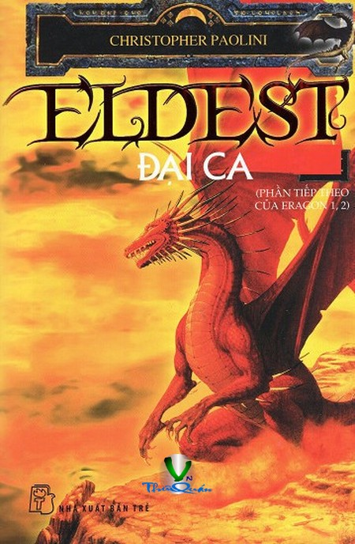

« Back
Eldest - Đại Ca
By Christopher Paolini

Tóm Tắt Phần I Eragon - Cậu Bé Cưỡi Rồng
Tai Ương Dồn Dập
Hội Đồng Tiền Bối
Bằng Hữu Chân Thành
Roran
Thợ Săn Bị Săn Đuổi
Lời Hứa Của Saphira
Lễ Tang
Tuyên Thệ
Một Pháp Sư, Một Con Rắn Và Một Bức Mật Thư
Món Quà Của Vua Lùn Hrothgar
Búa Và Kìm Kẹp
Phục Thù
Az Sweldn Rak Anhuin - Nước Mắt Nàng Anhuin
Ngôi Đền Celbedeil
Kim Cương Trong Đêm Tối
Dưới Bầu Trời U Ám
Đụng Độ Sinh Vật Lạ
Bềnh Bồng Sông Nước
Arya Svit-Kona - Công Nương Arya
Trạm Ceris
Vết Thương Quá Khứ
Vết Thương Hiện Tại
Rõ Mặt Kẻ Thù
Mũi Tên Bắn Trúng Tim
Lễ Cầu Đảo
Thành Phố Rừng Thông
Nữ Hoàng Islanzadí
Hiện Ra Từ Quá Khứ
Lời Phán Quyết
Hưởng Ứng Lời Kêu Gọi
Di Tản
Trên Bờ Vực Tel’Naeír
Đời Sống Bí Ẩn Của Loài Kiến
Dưới Bóng Cây Menoa
Những Mối Đối Nghịch Ngấm Ngầm
Gợi Ý Từ Sợi Chỉ
Elva
Cuồng Phong
Chiến Đấu Vì Lý Do Gì?
Đóa Hoa Đen Rực Rỡ
Đóa Hoa Đen Rực Rỡ ( Tt)
Bản Chất Của Tội Ác
Quyển 2 - Chân Dung Hoàn Hảo
Quên Lãng
Thị Trấn Narda
Búa Lại Vung Lên
Bước Đầu Thận Trọng
Trứng Tan Tành - Tổ Tơi Tả
Quà Tặng Của Rồng
Dưới Bầu Trời Đầy Sao
Ghé Bờ
Thành Teirm
Joed Chân Dài
Một Đồng Minh Bất Ngờ
Chạy Trốn
Trò Trẻ
Linh Cảm Chiến Tranh
Hồng Kiếm - Bạch Kiếm Tranh Hùng
Những Hình Ảnh Xa Gần
Tặng Vật
Cuống Họng Của Đại Dương
Chạy Đua Với Mắt-Lợn-Lòi
Bay Tới Thủ Đô Aberon
Cánh-Đồng-Cháy
Mây Mù Của Chiến Tranh
Nar Garzhvog
Linh Dược Của Phù Thủy
Giông Tố Nổi Lên
Hội Tụ
Đại Ca
Của Thừa Kế
Đoàn Tụ
Phát Âm
The Ancient Language: Ngôn Ngữ Cổ
The Dwarf Language :Ngôn Ngữ Người Lùn